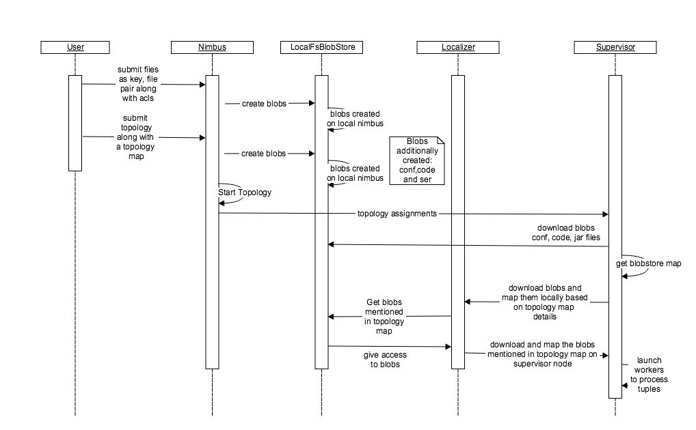
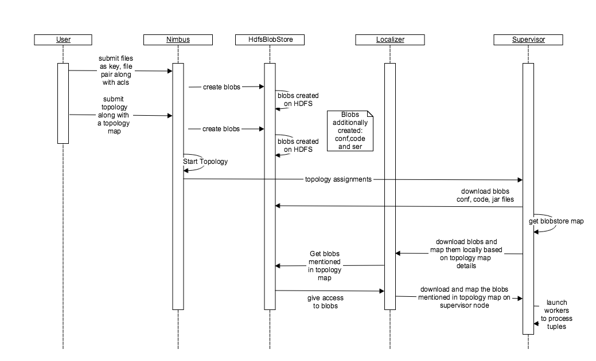
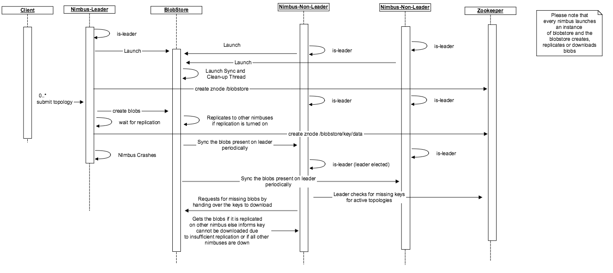

The distributed cache feature in storm is used to efficiently distribute files (or blobs, which is the equivalent terminology for a file in the distributed cache and is used interchangeably in this document) that are large and can change during the lifetime of a topology, such as geo-location data, dictionaries, etc. Typical use cases include phrase recognition, entity extraction, document classification, URL re-writing, location/address detection and so forth. Such files may be several KB to several GB in size. For small datasets that don't need dynamic updates, including them in the topology jar could be fine. But for large files, the startup times could become very large. In these cases, the distributed cache feature can provide fast topology startup, especially if the files were previously downloaded for the same submitter and are still in the cache. This is useful with frequent deployments, sometimes few times a day with updated jars, because the large cached files will remain available without changes. The large cached blobs that do not change frequently will remain available in the distributed cache.
At the starting time of a topology, the user specifies the set of files the topology needs. Once a topology is running, the user at any time can request for any file in the distributed cache to be updated with a newer version. The updating of blobs happens in an eventual consistency model. If the topology needs to know what version of a file it has access to, it is the responsibility of the user to find this information out. The files are stored in a cache with Least-Recently Used (LRU) eviction policy, where the supervisor decides which cached files are no longer needed and can delete them to free disk space. The blobs can be compressed, and the user can request the blobs to be uncompressed before it accesses them.
The current BlobStore interface has the following two implementations * LocalFsBlobStore * HdfsBlobStore
Appendix A contains the interface for blobstore implementation.

Local file system implementation of Blobstore can be depicted in the above timeline diagram.
There are several stages from blob creation to blob download and corresponding execution of a topology. The main stages can be depicted as follows
Blobs in the blobstore can be created through command line using the following command.
storm blobstore create --file README.txt --acl o::rwa --replication-factor 4 key1
The above command creates a blob with a key name “key1” corresponding to the file README.txt. The access given to all users being read, write and admin with a replication factor of 4.
Users can submit their topology with the following command. The command includes the topology map configuration. The configuration holds two keys “key1” and “key2” with the key “key1” having a local file name mapping named “blob_file” and it is not compressed.
storm jar /home/y/lib/storm-starter/current/storm-starter-jar-with-dependencies.jar
org.apache.storm.starter.clj.word_count test_topo -c topology.blobstore.map='{"key1":{"localname":"blob_file", "uncompress":false},"key2":{}}'
The creation of the blob takes place through the interface “ClientBlobStore”. Appendix B contains the “ClientBlobStore” interface. The concrete implementation of this interface is the “NimbusBlobStore”. In the case of local file system the client makes a call to the nimbus to create the blobs within the local file system. The nimbus uses the local file system implementation to create these blobs. When a user submits a topology, the jar, configuration and code files are uploaded as blobs with the help of blobstore. Also, all the other blobs specified by the topology are mapped to it with the help of topology.blobstore.map configuration.
Finally, the blobs corresponding to a topology are downloaded by the supervisor once it receives the assignments from the nimbus through the same “NimbusBlobStore” thrift client that uploaded the blobs. The supervisor downloads the code, jar and conf blobs by calling the “NimbusBlobStore” client directly while the blobs specified in the topology.blobstore.map are downloaded and mapped locally with the help of the Localizer. The Localizer talks to the “NimbusBlobStore” thrift client to download the blobs and adds the blob compression and local blob name mapping logic to suit the implementation of a topology. Once all the blobs have been downloaded the workers are launched to run the topologies.

The HdfsBlobStore functionality has a similar implementation and blob creation and download procedure barring how the replication is handled in the two blobstore implementations. The replication in HDFS blobstore is obvious as HDFS is equipped to handle replication and it requires no state to be stored inside the zookeeper. On the other hand, the local file system blobstore requires the state to be stored on the zookeeper in order for it to work with nimbus HA. Nimbus HA allows the local filesystem to implement the replication feature seamlessly by storing the state in the zookeeper about the running topologies and syncing the blobs on various nimbuses. On the supervisor’s end, the supervisor and localizer talks to HdfsBlobStore through “HdfsClientBlobStore” implementation.
storm jar /home/y/lib/storm-starter/current/storm-starter-jar-with-dependencies.jar org.apache.storm.starter.clj.word_count test_topo
-c topology.blobstore.map='{"key1":{"localname":"blob_file", "uncompress":false},"key2":{}}'
The blobstore allows the user to specify the “uncompress” configuration to true or false. This configuration can be specified in the topology.blobstore.map mentioned in the above command. This allows the user to upload a compressed file like a tarball/zip. In local file system blobstore, the compressed blobs are stored on the nimbus node. The localizer code takes the responsibility to uncompress the blob and store it on the supervisor node. Symbolic links to the blobs on the supervisor node are created within the worker before the execution starts.
Apart from compression the blobstore helps to give the blob a name that can be used by the workers. The localizer takes the responsibility of mapping the blob to a local name on the supervisor node.
Blobstore uses a hashing function to create the blobs based on the key. The blobs are generally stored inside the directory specified by the blobstore.dir configuration. By default, it is stored under “storm.local.dir/blobs” for local file system and a similar path on hdfs file system.
Once a file is submitted, the blobstore reads the configs and creates a metadata for the blob with all the access control details. The metadata is generally used for authorization while accessing the blobs. The blob key and version contribute to the hash code and there by the directory under “storm.local.dir/blobs/data” where the data is placed. The blobs are generally placed in a positive number directory like 193,822 etc.
Once the topology is launched and the relevant blobs have been created, the supervisor downloads blobs related to the storm.conf, storm.ser and storm.code first and all the blobs uploaded by the command line separately using the localizer to uncompress and map them to a local name specified in the topology.blobstore.map configuration. The supervisor periodically updates blobs by checking for the change of version. This allows updating the blobs on the fly and thereby making it a very useful feature.
For a local file system, the distributed cache on the supervisor node is set to 10240 MB as a soft limit and the clean up code attempts to clean anything over the soft limit every 600 seconds based on LRU policy.
The HDFS blobstore implementation handles load better by removing the burden on the nimbus to store the blobs, which avoids it becoming a bottleneck. Moreover, it provides seamless replication of blobs. On the other hand, the local file system blobstore is not very efficient in replicating the blobs and is limited by the number of nimbuses. Moreover, the supervisor talks to the HDFS blobstore directly without the involvement of the nimbus and thereby reduces the load and dependency on nimbus.
Currently the storm master aka nimbus, is a process that runs on a single machine under supervision. In most cases, the nimbus failure is transient and it is restarted by the process that does supervision. However sometimes when disks fail and networks partitions occur, nimbus goes down. Under these circumstances, the topologies run normally but no new topologies can be submitted, no existing topologies can be killed/deactivated/activated and if a supervisor node fails then the reassignments are not performed resulting in performance degradation or topology failures. With this project we intend, to resolve this problem by running nimbus in a primary backup mode to guarantee that even if a nimbus server fails one of the backups will take over.
The nimbus server will use the following interface:
public interface ILeaderElector {
/**
* queue up for leadership lock. The call returns immediately and the caller
* must check isLeader() to perform any leadership action.
*/
void addToLeaderLockQueue();
/**
* Removes the caller from the leader lock queue. If the caller is leader
* also releases the lock.
*/
void removeFromLeaderLockQueue();
/**
*
* @return true if the caller currently has the leader lock.
*/
boolean isLeader();
/**
*
* @return the current leader's address , throws exception if noone has has lock.
*/
InetSocketAddress getLeaderAddress();
/**
*
* @return list of current nimbus addresses, includes leader.
*/
List<InetSocketAddress> getAllNimbusAddresses();
}
Once a nimbus comes up it calls addToLeaderLockQueue() function. The leader election code selects a leader from the queue. If the topology code, jar or config blobs are missing, it would download the blobs from any other nimbus which is up and running.
The first implementation will be Zookeeper based. If the zookeeper connection is lost/reset resulting in loss of lock or the spot in queue the implementation will take care of updating the state such that isLeader() will reflect the current status. The leader like actions must finish in less than minimumOf(connectionTimeout, SessionTimeout) to ensure the lock was held by nimbus for the entire duration of the action (Not sure if we want to just state this expectation and ensure that zk configurations are set high enough which will result in higher failover time or we actually want to create some sort of rollback mechanism for all actions, the second option needs a lot of code). If a nimbus that is not leader receives a request that only a leader can perform, it will throw a RunTimeException.
To achieve fail over from primary to backup servers nimbus state/data needs to be replicated across all nimbus hosts or needs to be stored in a distributed storage. Replicating the data correctly involves state management, consistency checks and it is hard to test for correctness. However many storm users do not want to take extra dependency on another replicated storage system like HDFS and still need high availability. The blobstore implementation along with the state storage helps to overcome the failover scenarios in case a leader nimbus goes down.
To support replication we will allow the user to define a code replication factor which would reflect number of nimbus hosts to which the code must be replicated before starting the topology. With replication comes the issue of consistency. The topology is launched once the code, jar and conf blob files are replicated based on the "topology.min.replication" config. Maintaining state for failover scenarios is important for local file system. The current implementation makes sure one of the available nimbus is elected as a leader in the case of a failure. If the topology specific blobs are missing, the leader nimbus tries to download them as and when they are needed. With this current architecture, we do not have to download all the blobs required for a topology for a nimbus to accept leadership. This helps us in case the blobs are very large and avoid causing any inadvertant delays in electing a leader.
The state for every blob is relevant for the local blobstore implementation. For HDFS blobstore the replication is taken care by the HDFS. For handling the fail over scenarios for a local blobstore we need to store the state of the leader and non-leader nimbuses within the zookeeper.
The state is stored under /storm/blobstore/key/nimbusHostPort:SequenceNumber for the blobstore to work to make nimbus highly available. This state is used in the local file system blobstore to support replication. The HDFS blobstore does not have to store the state inside the zookeeper.
NimbusHostPort: This piece of information generally contains the parsed string holding the hostname and port of the nimbus. It uses the same class “NimbusHostPortInfo” used earlier by the code-distributor interface to store the state and parse the data.
SequenceNumber: This is the blob sequence number information. The SequenceNumber information is implemented by a KeySequenceNumber class. The sequence numbers are generated for every key. For every update, the sequence numbers are assigned based ona global sequence number stored under /storm/blobstoremaxsequencenumber/key. For more details about how the numbers are generated you can look at the java docs for KeySequenceNumber.

The sequence diagram proposes how the blobstore works and the state storage inside the zookeeper makes the nimbus highly available. Currently, the thread to sync the blobs on a non-leader is within the nimbus. In the future, it will be nice to move the thread around to the blobstore to make the blobstore coordinate the state change and blob download as per the sequence diagram.
In order to avoid workers/supervisors/ui talking to zookeeper for getting master nimbus address we are going to modify the
getClusterInfo API so it can also return nimbus information. getClusterInfo currently returns ClusterSummary instance
which has a list of supervisorSummary and a list of topologySummary instances. We will add a list of NimbusSummary
to the ClusterSummary. See the structures below:
struct ClusterSummary {
1: required list<SupervisorSummary> supervisors;
3: required list<TopologySummary> topologies;
4: required list<NimbusSummary> nimbuses;
}
struct NimbusSummary {
1: required string host;
2: required i32 port;
3: required i32 uptime_secs;
4: required bool isLeader;
5: required string version;
}
This will be used by StormSubmitter, Nimbus clients, supervisors and ui to discover the current leaders and participating nimbus hosts. Any nimbus host will be able to respond to these requests. The nimbus hosts can read this information once from zookeeper and cache it and keep updating the cache when the watchers are fired to indicate any changes,which should be rare in general case.
Note: All nimbus hosts have watchers on zookeeper to be notified immediately as soon as a new blobs is available for download, the callback may or may not download the code. Therefore, a background thread is triggered to download the respective blobs to run the topologies. The replication is achieved when the blobs are downloaded onto non-leader nimbuses. So you should expect your topology submission time to be somewhere between 0 to (2 * nimbus.code.sync.freq.secs) for any nimbus.min.replication.count > 1.
blobstore.dir: The directory where all blobs are stored. For local file system it represents the directory on the nimbus
node and for HDFS file system it represents the hdfs file system path.
supervisor.blobstore.class: This configuration is meant to set the client for the supervisor in order to talk to the blobstore.
For a local file system blobstore it is set to “org.apache.storm.blobstore.NimbusBlobStore” and for the HDFS blobstore it is set
to “org.apache.storm.blobstore.HdfsClientBlobStore”.
supervisor.blobstore.download.thread.count: This configuration spawns multiple threads for from the supervisor in order download
blobs concurrently. The default is set to 5
supervisor.blobstore.download.max_retries: This configuration is set to allow the supervisor to retry for the blob download.
By default it is set to 3.
supervisor.localizer.cache.target.size.mb: The jvm opts provided to workers launched by this supervisor. All "%ID%" substrings
are replaced with an identifier for this worker. Also, "%WORKER-ID%", "%STORM-ID%" and "%WORKER-PORT%" are replaced with
appropriate runtime values for this worker. The distributed cache target size in MB. This is a soft limit to the size
of the distributed cache contents. It is set to 10240 MB.
supervisor.localizer.cleanup.interval.ms: The distributed cache cleanup interval. Controls how often it scans to attempt to
cleanup anything over the cache target size. By default it is set to 600000 milliseconds.
nimbus.blobstore.class: Sets the blobstore implementation nimbus uses. It is set to "org.apache.storm.blobstore.LocalFsBlobStore"
nimbus.blobstore.expiration.secs: During operations with the blobstore, via master, how long a connection is idle before nimbus
considers it dead and drops the session and any associated connections. The default is set to 600.
storm.blobstore.inputstream.buffer.size.bytes: The buffer size it uses for blobstore upload. It is set to 65536 bytes.
client.blobstore.class: The blobstore implementation the storm client uses. The current implementation uses the default
config "org.apache.storm.blobstore.NimbusBlobStore".
blobstore.replication.factor: It sets the replication for each blob within the blobstore. The “topology.min.replication.count”
ensures the minimum replication the topology specific blobs are set before launching the topology. You might want to set the
“topology.min.replication.count <= blobstore.replication”. The default is set to 3.
topology.min.replication.count : Minimum number of nimbus hosts where the code must be replicated before leader nimbus
can mark the topology as active and create assignments. Default is 1.
topology.max.replication.wait.time.sec: Maximum wait time for the nimbus host replication to achieve the nimbus.min.replication.count.
Once this time is elapsed nimbus will go ahead and perform topology activation tasks even if required nimbus.min.replication.count is not achieved.
The default is 60 seconds, a value of -1 indicates to wait for ever.
* nimbus.code.sync.freq.secs: Frequency at which the background thread on nimbus which syncs code for locally missing blobs. Default is 2 minutes.
Additionally, if you want to access to secure hdfs blobstore, you also need to set the following configs.
storm.hdfs.login.keytab or blobstore.hdfs.keytab (deprecated)
storm.hdfs.login.principal or blobstore.hdfs.principal (deprecated)
For example,
storm.hdfs.login.keytab: /etc/keytab
storm.hdfs.login.principal: primary/instance@REALM
To use the distributed cache feature, the user first has to "introduce" files that need to be cached and bind them to key strings. To achieve this, the user uses the "blobstore create" command of the storm executable, as follows:
storm blobstore create [-f|--file FILE] [-a|--acl ACL1,ACL2,...] [--replication-factor NUMBER] [keyname]
The contents come from a FILE, if provided by -f or --file option, otherwise
from STDIN.
The ACLs, which can also be a comma separated list of many ACLs, is of the
following format:
> [u|o]:[username]:[r-|w-|a-|_]
where:
The replication factor can be set to a value greater than 1 using --replication-factor.
Note: The replication right now is configurable for a hdfs blobstore but for a local blobstore the replication always stays at 1. For a hdfs blobstore the default replication is set to 3.
storm blobstore create --file README.txt --acl o::rwa --replication-factor 4 key1
In the above example, the README.txt file is added to the distributed cache. It can be accessed using the key string "key1" for any topology that needs it. The file is set to have read/write/admin access for others, a.k.a world everything and the replication is set to 4.
storm blobstore create mytopo:data.tgz -f data.tgz -a u:alice:rwa,u:bob:rw,o::r
The above example createss a mytopo:data.tgz key using the data stored in data.tgz. User alice would have full access, bob would have read/write access and everyone else would have read access.
Once a blob is created, we can use it for topologies. This is generally achieved by including the key string among the configurations of a topology, with the following format. A shortcut is to add the configuration item on the command line when starting a topology by using the -c command:
-c topology.blobstore.map='{"[KEY]":{"localname":"[VALUE]", "uncompress":[true|false]}}'
Note: Please take care of the quotes.
The cache file would then be accessible to the topology as a local file with the
name [VALUE].
The localname parameter is optional, if omitted the local cached file will have
the same name as [KEY].
The uncompress parameter is optional, if omitted the local cached file will not
be uncompressed. Note that the key string needs to have the appropriate
file-name-like format and extension, so it can be uncompressed correctly.
storm jar /home/y/lib/storm-starter/current/storm-starter-jar-with-dependencies.jar org.apache.storm.starter.clj.word_count test_topo -c topology.blobstore.map='{"key1":{"localname":"blob_file", "uncompress":false},"key2":{}}'
Note: Please take care of the quotes.
In the above example, we start the word_count topology (stored in the storm-starter-jar-with-dependencies.jar file), and ask it to have access to the cached file stored with key string = key1. This file would then be accessible to the topology as a local file called blob_file, and the supervisor will not try to uncompress the file. Note that in our example, the file's content originally came from README.txt. We also ask for the file stored with the key string = key2 to be accessible to the topology. Since both the optional parameters are omitted, this file will get the local name = key2, and will not be uncompressed.
It is possible for the cached files to be updated while topologies are running. The update happens in an eventual consistency model, where the supervisors poll Nimbus every 30 seconds, and update their local copies. In the current version, it is the user's responsibility to check whether a new file is available.
To update a cached file, use the following command. Contents come from a FILE or STDIN. Write access is required to be able to update a cached file.
storm blobstore update [-f|--file NEW_FILE] [KEYSTRING]
storm blobstore update -f updates.txt key1
In the above example, the topologies will be presented with the contents of the file updates.txt instead of README.txt (from the previous example), even though their access by the topology is still through a file called blob_file.
To remove a file from the distributed cache, use the following command. Removing a file requires write access.
storm blobstore delete [KEYSTRING]
storm blobstore list [KEY...]
lists blobs currently in the blobstore
storm blobstore cat [-f|--file FILE] KEY
read a blob and then either write it to a file, or STDOUT. Reading a blob requires read access.
set-acl [-s ACL] KEY
ACL is in the form [uo]:[username]:[r-][w-][a-] can be comma separated list (requires admin access).
storm blobstore replication --update --replication-factor 5 key1
storm blobstore replication --read key1
storm help blobstore
We start by getting a ClientBlobStore object by calling this function:
Config theconf = new Config();
theconf.putAll(Utils.readStormConfig());
ClientBlobStore clientBlobStore = Utils.getClientBlobStore(theconf);
The required Utils package can by imported by:
import org.apache.storm.utils.Utils;
ClientBlobStore and other blob-related classes can be imported by:
import org.apache.storm.blobstore.ClientBlobStore;
import org.apache.storm.blobstore.AtomicOutputStream;
import org.apache.storm.blobstore.InputStreamWithMeta;
import org.apache.storm.blobstore.BlobStoreAclHandler;
import org.apache.storm.generated.*;
String stringBlobACL = "u:username:rwa";
AccessControl blobACL = BlobStoreAclHandler.parseAccessControl(stringBlobACL);
List<AccessControl> acls = new LinkedList<AccessControl>();
acls.add(blobACL); // more ACLs can be added here
SettableBlobMeta settableBlobMeta = new SettableBlobMeta(acls);
settableBlobMeta.set_replication_factor(4); // Here we can set the replication factor
The settableBlobMeta object is what we need to create a blob in the next step.
AtomicOutputStream blobStream = clientBlobStore.createBlob("some_key", settableBlobMeta);
blobStream.write("Some String or input data".getBytes());
blobStream.close();
Note that the settableBlobMeta object here comes from the last step, creating ACLs. It is recommended that for very large files, the user writes the bytes in smaller chunks (for example 64 KB, up to 1 MB chunks).
Similar to creating a blob, but we get the AtomicOutputStream in a different way:
String blobKey = "some_key";
AtomicOutputStream blobStream = clientBlobStore.updateBlob(blobKey);
Pass a byte stream to the returned AtomicOutputStream as before.
String blobKey = "some_key";
AccessControl updateAcl = BlobStoreAclHandler.parseAccessControl("u:USER:--a");
List<AccessControl> updateAcls = new LinkedList<AccessControl>();
updateAcls.add(updateAcl);
SettableBlobMeta modifiedSettableBlobMeta = new SettableBlobMeta(updateAcls);
clientBlobStore.setBlobMeta(blobKey, modifiedSettableBlobMeta);
//Now set write only
updateAcl = BlobStoreAclHandler.parseAccessControl("u:USER:-w-");
updateAcls = new LinkedList<AccessControl>();
updateAcls.add(updateAcl);
modifiedSettableBlobMeta = new SettableBlobMeta(updateAcls);
clientBlobStore.setBlobMeta(blobKey, modifiedSettableBlobMeta);
String blobKey = "some_key";
BlobReplication replication = clientBlobStore.updateBlobReplication(blobKey, 5);
int replication_factor = replication.get_replication();
Note: The replication factor gets updated and reflected only for hdfs blobstore
String blobKey = "some_key";
InputStreamWithMeta blobInputStream = clientBlobStore.getBlob(blobKey);
BufferedReader r = new BufferedReader(new InputStreamReader(blobInputStream));
String blobContents = r.readLine();
String blobKey = "some_key";
clientBlobStore.deleteBlob(blobKey);
Iterator <String> stringIterator = clientBlobStore.listKeys();
public abstract void prepare(Map conf, String baseDir);
public abstract AtomicOutputStream createBlob(String key, SettableBlobMeta meta, Subject who) throws AuthorizationException, KeyAlreadyExistsException;
public abstract AtomicOutputStream updateBlob(String key, Subject who) throws AuthorizationException, KeyNotFoundException;
public abstract ReadableBlobMeta getBlobMeta(String key, Subject who) throws AuthorizationException, KeyNotFoundException;
public abstract void setBlobMeta(String key, SettableBlobMeta meta, Subject who) throws AuthorizationException, KeyNotFoundException;
public abstract void deleteBlob(String key, Subject who) throws AuthorizationException, KeyNotFoundException;
public abstract InputStreamWithMeta getBlob(String key, Subject who) throws AuthorizationException, KeyNotFoundException;
public abstract Iterator<String> listKeys(Subject who);
public abstract BlobReplication getBlobReplication(String key, Subject who) throws Exception;
public abstract BlobReplication updateBlobReplication(String key, int replication, Subject who) throws AuthorizationException, KeyNotFoundException, IOException
public abstract void prepare(Map conf);
protected abstract AtomicOutputStream createBlobToExtend(String key, SettableBlobMeta meta) throws AuthorizationException, KeyAlreadyExistsException;
public abstract AtomicOutputStream updateBlob(String key) throws AuthorizationException, KeyNotFoundException;
public abstract ReadableBlobMeta getBlobMeta(String key) throws AuthorizationException, KeyNotFoundException;
protected abstract void setBlobMetaToExtend(String key, SettableBlobMeta meta) throws AuthorizationException, KeyNotFoundException;
public abstract void deleteBlob(String key) throws AuthorizationException, KeyNotFoundException;
public abstract InputStreamWithMeta getBlob(String key) throws AuthorizationException, KeyNotFoundException;
public abstract Iterator<String> listKeys();
public abstract void watchBlob(String key, IBlobWatcher watcher) throws AuthorizationException;
public abstract void stopWatchingBlob(String key) throws AuthorizationException;
public abstract BlobReplication getBlobReplication(String Key) throws AuthorizationException, KeyNotFoundException;
public abstract BlobReplication updateBlobReplication(String Key, int replication) throws AuthorizationException, KeyNotFoundException
service Nimbus {
...
string beginCreateBlob(1: string key, 2: SettableBlobMeta meta) throws (1: AuthorizationException aze, 2: KeyAlreadyExistsException kae);
string beginUpdateBlob(1: string key) throws (1: AuthorizationException aze, 2: KeyNotFoundException knf);
void uploadBlobChunk(1: string session, 2: binary chunk) throws (1: AuthorizationException aze);
void finishBlobUpload(1: string session) throws (1: AuthorizationException aze);
void cancelBlobUpload(1: string session) throws (1: AuthorizationException aze);
ReadableBlobMeta getBlobMeta(1: string key) throws (1: AuthorizationException aze, 2: KeyNotFoundException knf);
void setBlobMeta(1: string key, 2: SettableBlobMeta meta) throws (1: AuthorizationException aze, 2: KeyNotFoundException knf);
BeginDownloadResult beginBlobDownload(1: string key) throws (1: AuthorizationException aze, 2: KeyNotFoundException knf);
binary downloadBlobChunk(1: string session) throws (1: AuthorizationException aze);
void deleteBlob(1: string key) throws (1: AuthorizationException aze, 2: KeyNotFoundException knf);
ListBlobsResult listBlobs(1: string session);
BlobReplication getBlobReplication(1: string key) throws (1: AuthorizationException aze, 2: KeyNotFoundException knf);
BlobReplication updateBlobReplication(1: string key, 2: i32 replication) throws (1: AuthorizationException aze, 2: KeyNotFoundException knf);
...
}
struct BlobReplication {
1: required i32 replication;
}
exception AuthorizationException {
1: required string msg;
}
exception KeyNotFoundException {
1: required string msg;
}
exception KeyAlreadyExistsException {
1: required string msg;
}
enum AccessControlType {
OTHER = 1,
USER = 2
//eventually ,GROUP=3
}
struct AccessControl {
1: required AccessControlType type;
2: optional string name; //Name of user or group in ACL
3: required i32 access; //bitmasks READ=0x1, WRITE=0x2, ADMIN=0x4
}
struct SettableBlobMeta {
1: required list<AccessControl> acl;
2: optional i32 replication_factor
}
struct ReadableBlobMeta {
1: required SettableBlobMeta settable;
//This is some indication of a version of a BLOB. The only guarantee is
// if the data changed in the blob the version will be different.
2: required i64 version;
}
struct ListBlobsResult {
1: required list<string> keys;
2: required string session;
}
struct BeginDownloadResult {
//Same version as in ReadableBlobMeta
1: required i64 version;
2: required string session;
3: optional i64 data_size;
}